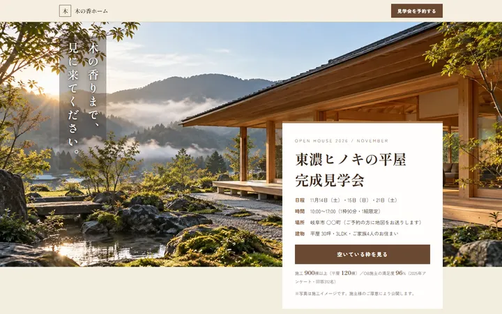
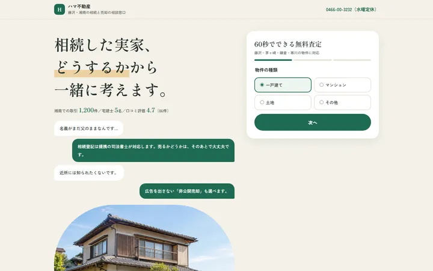
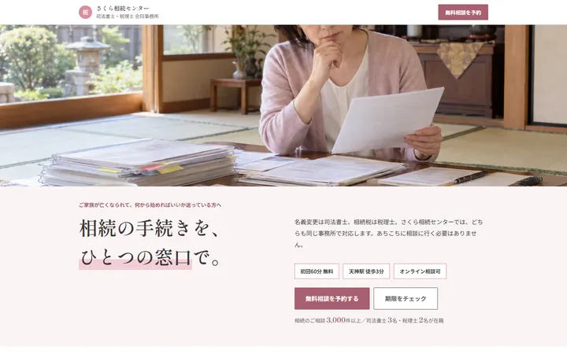
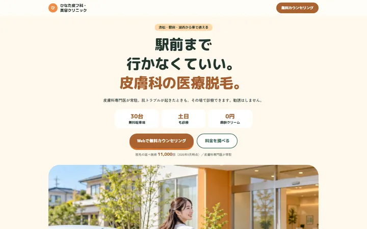
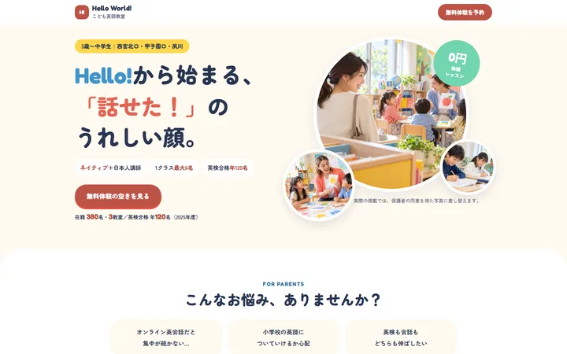
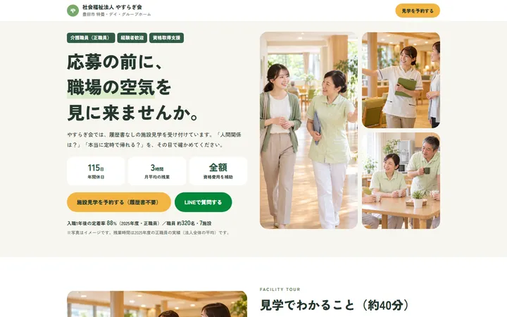
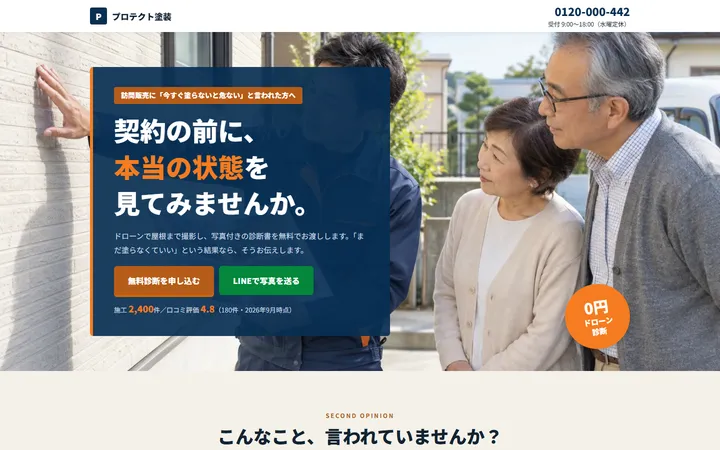
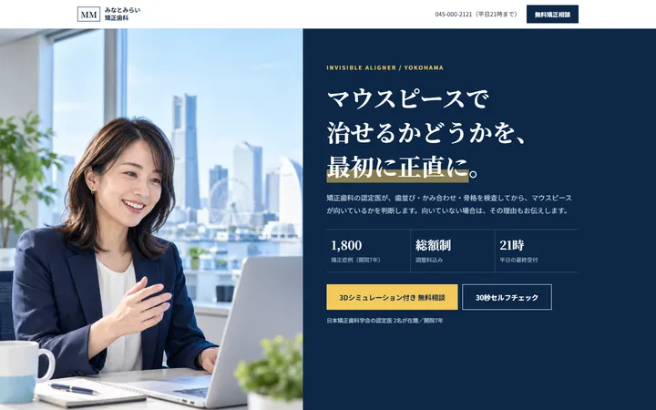

REASON 01
見に来る人が、いない。
ホームページは、作っただけでは誰も通らない場所にあります。探している人の目の前まで、道をつなぐ必要があります。
WEB集客をはじめて行う会社のための、集客用ホームページ（LP）制作とWEB広告運用。
110,000円（税込）広告費40,000円分込み
依頼するか決めていなくても大丈夫です。
1FOR YOU
1つでも当てはまるなら、原因はたいてい次の2つのどちらかです。
2WHY
ページの出来ばえより先に、確かめたいことがあります。
REASON 01
ホームページは、作っただけでは誰も通らない場所にあります。探している人の目の前まで、道をつなぐ必要があります。
REASON 02
会社概要、沿革、ブログ…。出口がたくさんあると、来た人はどこへ進めばよいか迷い、そのまま帰ってしまいます。
3LIMITS
どれも間違いではありません。ただ、2つの原因のどちらかが残りやすいのです。
| よくある対策 | 探している人に届くか | 来た人の次の一歩 | 結果を見て直せるか |
|---|---|---|---|
| 会社案内のホームページを作り直す | 作り直しても、道がなければ見つけてもらえない | 出口が多いまま | 何を見て直すかが決まりにくい |
| SNSの投稿をがんばる | フォロワーには届くが、いま探している人には届きにくい | 投稿ごとにばらばら | 手ごたえが数字になりにくい |
| 制作と広告を別々の会社に頼む | 届く | ページと広告の言葉がずれやすい | 窓口が2つで、直すまでに時間がかかる |
| NICO（ページと広告をセットで） | WEB広告で、探している人の前まで道をつなぐ | 行き先を「無料相談」など1つに絞ったページ | 配信後のレポートを見て、次の設計に戻す |
4HOW IT WORKS
入口が10個ある建物より、入口が1つのお店のほうが、人は迷わず入れます。集客用ホームページ（LP・ランディングページ）は、してほしい行動を1つに絞った「1つの扉」のページです。
集客用ホームページ（LP）：行き先を「無料相談」など1つに。スマホで読みやすく、迷わず進める文章と構成にします。
WEB広告：Facebook・Instagram広告、Google広告、検索キーワード広告から、事業に合うものを選び、探している人の前まで道をつなぎます。
配信後レポート：クリック、広告費、問い合わせ状況を振り返り、次に直すところを見つけます。
5EASY START
最初から原稿や写真がすべてそろっていなくても、相談できます。時間のかかる調べものと下書きはAIに任せ、あなたの事業に合わせる部分は人が担当します。
事業内容、いまの集客方法、困っていることを伺います。
制作内容、必要な素材、制作期間、広告運用期間、修正回数を決めます。
内容を確認していただきながら制作し、選んだWEB広告の配信準備をします。
広告を配信し、計測できる結果をレポートにまとめます。
まずは、いまの状況を話すところから。
無料で相談する6PROOF
開業したばかりのため、お客さまの声や実績はまだ掲載していません。
110,000円（税込）
この中に、広告費も入っています。
AIを制作の補助に使い、調査・構成案・文章案・画像づくりの手間を減らして、この価格にしています。比べた範囲では業界最安値級※1です。
※1 2026年10月 当社調べ。WEB検索で集めた、集客用ホームページ（LP）制作と広告運用をセットで提供する会社の公開価格のうち、広告費を除いた最低契約期間の総額を比較。ホームページ制作だけ、広告運用だけのサービスとは比べていません。
※掲載しているのはデザインのイメージです（お客さまの実績ではありません）。実際のデザインは、あなたの事業に合わせて一から考えます。








7YOUR CASE
答えた内容は、下の相談フォームに書き写されます。お名前や連絡先はここでは聞きません。
8BEFORE YOU ASK
広告や検索から来た人が最初に見る、1枚の縦長のページです。問い合わせや予約など、してほしい行動を1つに絞って作ります。NICOでは、わかりやすく「集客用ホームページ」と呼んでいます。
問い合わせ数や広告の成果を保証するサービスではありません。広告の反応や計測できる問い合わせ状況を振り返り、改善の材料を整理します。
はい。専門用語を使わず、事業内容といまのお悩みを伺うところから始めます。
はい。いまの制作環境を確認し、作り直しや修正など、対応できる範囲をご案内します。
Facebook・Instagram広告、Google広告、検索キーワード広告（調べている人に表示する広告）から、事業内容と届けたい相手に合わせて選びます。1つに絞るか組み合わせるかも、無料相談で一緒に決めます。
基本セットには広告費40,000円分を含みます。追加ページ、撮影、特殊機能、広告費の増額などをご希望の場合は、着手前に別途お見積もりします。
内容や素材の準備状況で異なります。制作期間、広告運用期間、修正回数は、お申し込み前に個別に確認します。
AIは調査・構成案・文章案・画像づくりの手伝いに使います。事業内容の理解、最終判断、品質確認、表現ルールの確認、広告運用は人が担当します。
はい。現状とご希望を伺い、対応範囲や進め方を確認したうえでご検討いただけます。
9PLAN
10CONTACT
必要なのは、お名前とメールアドレスだけです。ほかは書ける範囲で大丈夫です。
広告費込み税込110,000円
無料相談